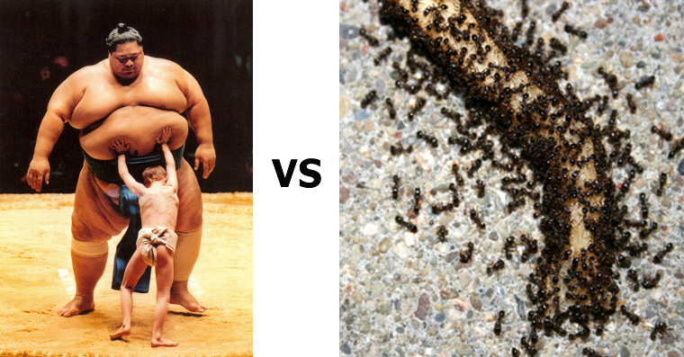
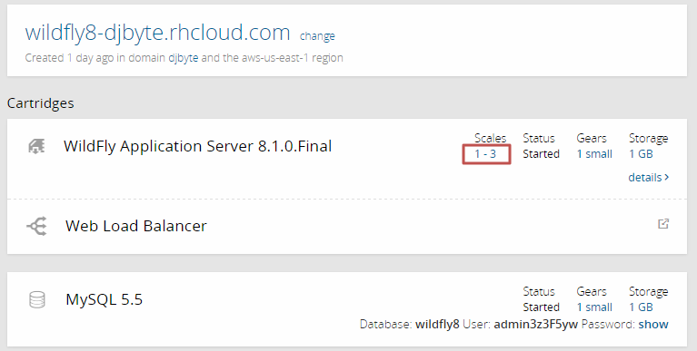
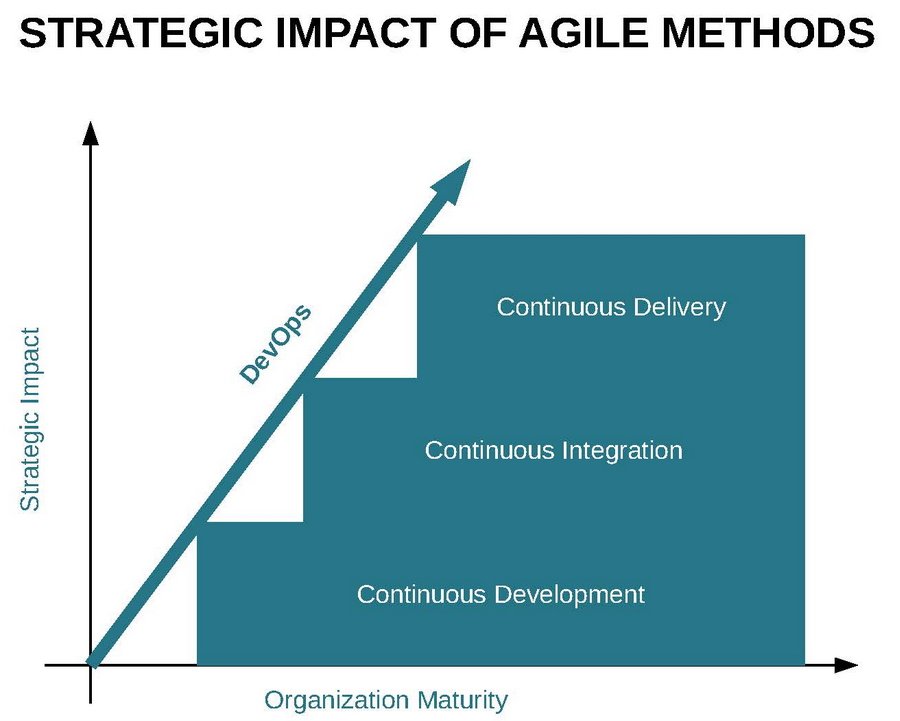
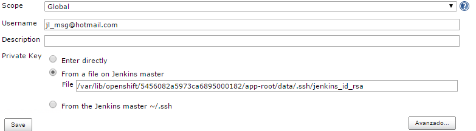

Servidores Web y PaaS
Sesión 8: Integración continua y escalabilidad
Índice
- Escalabilidad
- Autoescalado
- Crear aplicaciones escalables
- DevOps
- DevOps y Cloud Computing
- Integración continua
»Escalabilidad
Vertical vs Horizontal

Autoescalado
Funcionamiento:
- HAProxy, balanceador sw analiza el tráfico de entrada y lo redirige a los gear.
- Carga de trabajo >=90% de forma sostenida (16 conexiones activas por gear):
- Creación de un nuevo gear.
- rsync de la aplicación al nuevo gear.
- Activación y redirección de trafíco al nuevo gear.
- Carga de trabajo <50% de forma sostenida, se elimina un gear.
El sistema se adaptará a la carga de trabajo dentro de los límites definidos.
Autoescalado (II)
Autoescalado (III)
- En las aplicaciones escalables la BD se situa en un gear independiente.
- La BD es un elemento no escalable en OpenShift (hasta el momento).
- HAProxy por defecto utiliza el algoritmo leastconn de reparto de carga pero es configurable.
- ¿Y si se modifica el código de una aplicación escalable ya desplegada?
- El gear principal de la aplicación compilará la nueva versión.
- Los gears activos sincronizarán los cambios mediante rsync.
Motivos para definir una aplicación como escalable
- Mejor rendimiento al tener la BD un gear dedicado.
- Podemos controlar de forma automática o manual el número de gears utilizados.
- No es posible configurar como escalable una aplicación creada como no escalable.
El motivo principal para no hacerlo es que ahorramos gears...
Otras ventajas de las aplicaciones escalables
- En caso de fallo de una instancia, HAproxy enviar la petición a otro gear activo. No hay reinicios automáticos (!).
- Replicación de la sesión entre servidores. Uso de una caché destribuida llamada Infinispan.
- Fichero web.xml:
<distributable/> - Uso de Infinispan:
@Resource(lookup="java:jboss/infinispan/container/cluster") private CacheContainer container; // A partir de este punto se pueden utilizar los métodos get() y put() // para acceder y almacenar elementos en la caché.
- Fichero web.xml:
Cómo crear una aplicación escalable
rhc rhc app create [app] [cartridges]... -s
Ajustar autoescalado - Web (I)

Ajustar autoescalado - Web (II)

Ajustar autoescalado - RHC
rhc cartridge-scale [cartridge a configurar] -a [app] --min [minimo] --max [máximo] (*)
(*) -1: Máximo permitido por la cuenta
Aumentar/reducir gears manualmente:
rhc app scale-up [app]
rhc app scale-down [app]
Escalado manual:
cd /.openshift/markers
touch disable_auto_scaling
Monitorización balanceador (I)
http://[app]-[domain].rhcloud.com/haproxy-status

Monitorización balanceador (II)
Aumenta la carga de trabajo y se añade un gear:
Configuración HAProxy
Editar la configuración:
$ rhc ssh [app]
$ cd haproxy/conf
$ vi haproxy.cfg
Aplicar cambios reiniciando:
rhc cartridge-restart --cartridge haproxy -a [app]
»DevOps
Introducción (I)
- Las metodologías ágiles ya son una realidad en el desarrollo de aplicaciones.
- Un producto se compone de sw y la infraestructura necesaria para ejecutarse.
- Desarrollo vs Explotación:
- Desarrollo:
quiero construir y publicar lo que me pide el negocio con agilidad.
- Explotación:
me miden por el coste y disponibilidad. No quiero riesgos.
- Desarrollo:
Introducción (II)

Introducción (III)
- A la hora de preparar el despliegue en producción de un nuevo producto termina Agile y surgen las fricciones:
- Desarrollo:
demasiada burocracia, falta de permisos en producción, lentitud en los traspasos.
- Explotación:
falta de información sobre el software, procedimientos mal documentados, incertidumbre.
- Desarrollo:
DevOps es un propósito de reconducir esta situación. Participación activa de Sistemas en los proyectos y uso de las mismas metodologías que los desarrolladores.


En resumen, DevOps pretende mejorar la productividad potenciando el trabajo colaborativo dentre desarrolladores y técnicos de sistemas
permitiendo que:
- Desarrollo se centre en la construcción de las aplicaciones.
- Operaciones se centre en la creación de entornos estandarizados.
DevOps y Cloud Computing (I)
- IaaS y PaaS resuelven gran parte del trabajo de estandarización de entornos y procesos:
- Modalidad de despliegue continuo por defecto en OpenShift.
- Automatización de creación de aplicaciones y configuración de servicios
DevOps y Cloud Computing (II)
Integración continua
Entendemos por CI, un sistema que:
- Ante un cambio en el código de una aplicación automatiza la compilación y ejecución de pruebas.
- Si las pruebas son OK, la aplicación se puede desplegar.
- Si las pruebas falla, se mantiene la versión anterior de la aplicación en ejecución.
- Se suelen generar reports de las pruebas y análisis de código.
- Se apoya en herramientas estándar: git/svn... maven/ant... JUnit.
Jenkins CI
- Es la solución CI integrada en OpenShift
- Basta con indicar --enable-jenkins en el comando rhc o bien:

Funcionamiento de Jenkins

OpenShift proporciona:
- Paths a las herramientas.
- Configuración y seguridad básica.
- Tarea preconfigurada para lanzar las compilaciones (builds).
Builds
Configuración básica de una tarea
- Definición y descripción
- Builder a utilizar (gear dedicado)
- Origen del código fuente
- Disparadores de ejecucion
- Script Ejecución
- Tareas post-ejecución
Plugins de Jenkins
Añaden funciones nuevas e integran otros servicios.

Ejecución de una build (I)
- Por defecto Jenkins crea un gear específico para la tarea de compilación .
- Es bueno porque descarga de la tarea al gear que ejecuta la aplicación.
- Es malo porque podemos quedarnos sin gears!! (acceso gratuito)
Ejecución paso a paso:
1. Se hace push de un cambio en el código.
2. Se ejecuta un disparador en Jenkins ante el evento de push.
Ejecución de una build (II)
3. Jenkins crea un builder de nombre [app]bldr
4. Compilación:
- Se descarga el código fuente de Git y mediante rsync se actualizan librerías.
- Ejecución de ci_buid.sh
- .openshift/action_hooks/pre_build
- Pasos construcción definidos en Jenkins
- .openshift/action_hooks/build
- Pasos post-compilación
Ejecución de una build (III)
5. Parada de la aplicación (en caso de éxito).
6. actualización de artefactos mediante rsync.
7. Inicio de la aplicación.
8. Archivo de la información de la build en Jenkins.
A los 15 minutos de inactividad se libera el builder.
Control de errores
- En caso de errores podemos consultar los logs de Jenkins y los log de la aplicación con rhc tail.
- Goals por defecto de maven:
mvn -e clean package -Popenshift -DskipTests - Añadir nuevas pruebas y tareas adicionales
# Run tests here
Trabajar con un repositorio Bitbucket (I)
Tipos de credenciales:
- Público (sin credenciales).
- Usuario/password → Bitbucket Plugin
- Claves RSA →Permisos sobre ./ssh (no permitido en OpenShift)
Jenkins "modificado"
rhc create-app jenkins jenkins-1 \
https://cartreflect-claytondev.rhcloud.com/reflect?github=majecek/openshift-community-git-ssh
- Almacenamiento de claves en $OPENSHIFT_DATA_DIR/git-ssh
- Uso de la variable GIT_SSH apuntando a un script alternativo de uso de credenciales.
Claves RSA
Crear clave para Jenkins:
$ cd OPENSHIFT_DATA_DIR/git-ssh
$ ssh-keygen
#Especificar ruta completa
#var/lib/openshift/547ae964e0b8cdbb49000092/app-root/data/git-ssh/id_rsa
The key fingerprint is:
7d:f1:25:07:da:a7:e3:b0:c5:e0:e7:82:27:dc:2d:33 547ae964e0b8cdbb49000092@ex-std-node44.prod.rhcloud.com
The key's randomart image is:
+--[ RSA 2048]----+
| . |
| o . |
| + o +|
| . . = * |
| S . + B |
| . + O . |
| + E + |
| o = |
| |
+-----------------+
Configurar Bitbucket (I)
Informar de la clave pública:

Configurar Bitbucket (II)
Añadir un Hook POST:
Claves RSA - Bitbucket plugin
Seleccionar disparador y credenciales


Especificar rama de compilación

# Build/update libs and run user pre_build and build
GIT_BRANCH=master # <-- Forzar a compilar sobre la rama master
gear build
# Run tests here
Alternativas a Jenkins (I)
- SaaS: Travis, Shippable, CodeShip...
- Leen de nuestro repositorio de fuentes y hacer un push al repositorio de OpenShift
Shippable
shippable.yml
language: java
jdk:
- openjdk7
env:
global:
- JBOSS_HOME=/tmp/jboss-as-7.1.0.Final
- JBOSS_SERVER_LOCATION=http://download.jboss.org/jbossas/7.1/jboss-as-7.1.0.Final/jboss-as-7.1.0.Final.tar.gz
- OPENSHIFT_REPO=ssh://54566a5a5973ca89760000cf@jbossas-djbyte.rhcloud.com/~/git/jbossas.git/
before_install:
- if [ ! -e $JBOSS_HOME ]; then curl -s $JBOSS_SERVER_LOCATION | tar zx -C /tmp; fi
- git remote -v | grep ^openshift || git remote add openshift $OPENSHIFT_REPO
before_script:
- mkdir -p shippable/testresults
- mkdir -p shippable/codecoverage
script:
- mvn clean cobertura:cobertura
- mvn test -Parq-jbossas-managed
after_success:
- git push -f openshift $BRANCH:master
Build Pipeline (I)
- Tenemos herramientas para automatizar la creación y despliegue de aplicaciones.
- Crear servidores para pruebas específicas (features).
- Es necesario definir y procedimentar un ciclo de vida del software. Ej:
- Desarrollo: El programador sube sus cambios y los integra con sus compañeros de forma automática (Jenkins).
- Test: Subida de sw diaria. Realización de pruebas automáticas y de usuario.
- Preproducción/Stage: Manualmente se sube el sw que va a pasar a producción. Últimas pruebas.
- Producción: Subida manual con el OK del usuario.